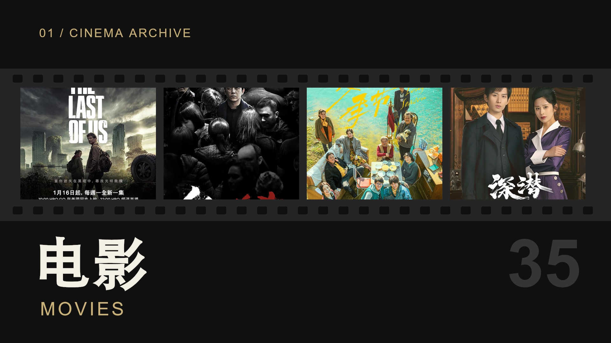
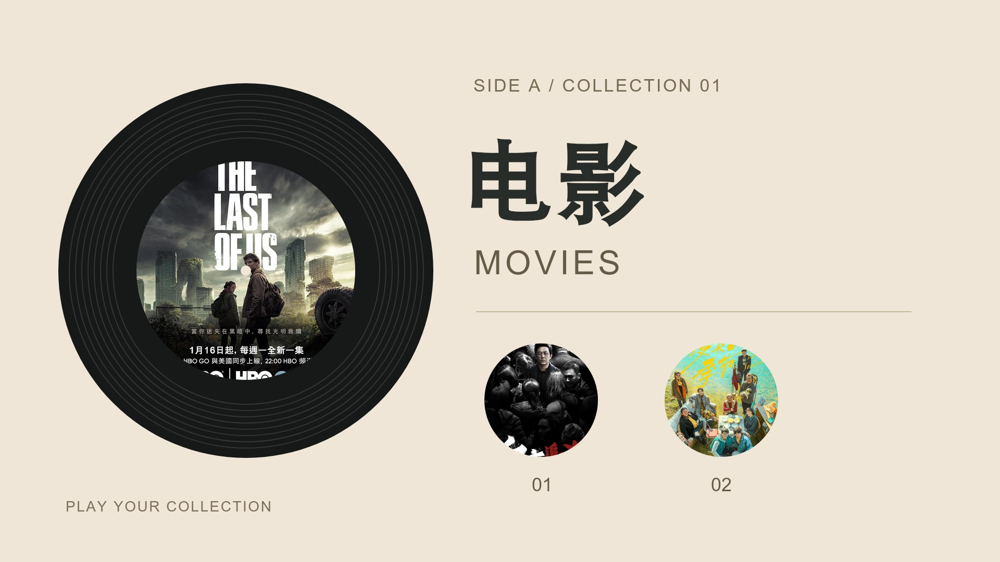
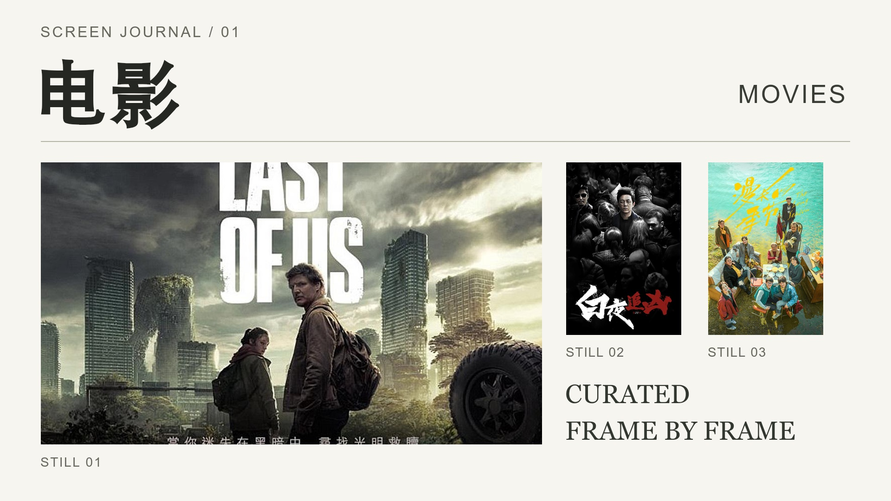

1920 × 1080 · 可编辑 · 可导入导出 · 未加入默认初始化
大幅票根纸面、左侧单张海报、右侧主副标题，带齿孔与编号装饰。

横贯画面的四格胶片与上下齿孔，底部大标题；四张图片按横向画幅裁切。

左侧唱片刻纹与圆形海报唱片标签，右侧标题和两枚独立圆形封面。

上方刊物式大标题、左下横向主视觉、右侧双图与图注的杂志编排。
五枚圆形海报沿椭圆轨道分布，标题位于中央留白，带细线与星图节点。
四幅横向裁切画面铺满四角，中央横贯标题带，适合强调多部影片的分类封面。
七张六边形海报组成蜂巢，底部主副标题与浅色画册背景。